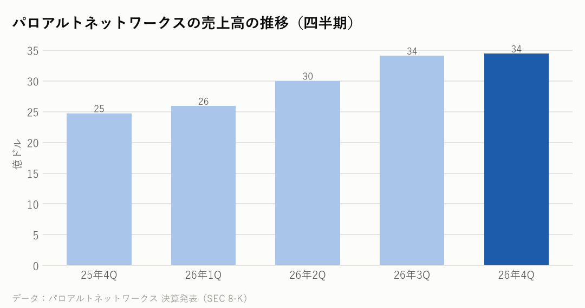
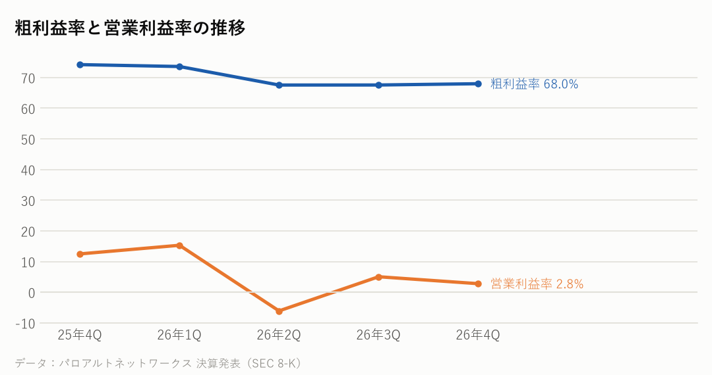

PANW｜2026年8〜10月期（2027年度第1四半期）の決算｜決算発表 2026年11月18日（米国時間、取引終了後）
パロアルトネットワークスの決算：売上は39%増なのに、なぜ営業利益は7割減った？――買収の重い費用と、一度きりの税の戻り
サイバーセキュリティ専業の最大手のパロアルトネットワークス（売上は同業のフォーティネットの約1.7倍、クラウドストライクの約2.3倍）の8〜10月期は、売上高が前年同期比39%増の34.4億ドルだった。一方、会計上の営業利益は69%減の0.96億ドル。買収した会社の償却や株式報酬が重いため。純利益は44%増の4.82億ドルだが、一度きりの税の戻り（4.57億ドル）によるもの。会社は2027年度（2027年7月まで）の売上の見通しを145億ドル台に上げ、AIの会社 Applied Compute を約45億ドル（株式）で買うと発表した。
主な数字（2026年8〜10月期（2027年度第1四半期））
| 今回 | 前年同期 | 前年比 | |
|---|---|---|---|
| 売上高 | 34億ドル | 25億ドル | +39.2% |
| 営業利益 | 1.0億ドル | 3.1億ドル | -68.9% |
| 営業利益率 | 2.8% | 12.5% | |
| 純利益 | 4.8億ドル | 3.3億ドル | +44.3% |
売上の内訳と契約の指標（8〜10月期）
| 項目 | 金額 | 前年同期比 |
|---|---|---|
| 製品（機器など） | 5.95億ドル | +37.1% |
| サブスク・保守 | 28.5億ドル | +39.7% |
| 次世代分野の年間契約額 | 97.3億ドル | +66.0% |
| 契約済みで未計上の売上 | 210億ドル | +35.0% |

会社の見通し
| 11〜1月期の売上高 | 35.3〜35.5億ドル（36〜37%増） |
|---|---|
| 2027年度の売上高 | 145.2〜145.7億ドル（前回141〜142億） |
| 年度の1株利益（調整後） | 4.26〜4.30ドル（前回4.16〜4.19） |
| 調整後の営業利益率 | 29.5%（前回と同じ） |
- 11〜1月期の売上高は35.3〜35.5億ドル（前年同期比36〜37%増）の見通し。
- 2027年度の売上高の見通しを、9月の141〜142億ドルから145.2〜145.7億ドルに上げた。真ん中で約4億ドルの上げで、そのうち約1.4億ドルは8〜10月期が見通しを上回った分。
- 8〜10月期の売上高（34.4億ドル）と調整後の1株利益（1.05ドル）は、9月に会社が出した見通し（33.0〜33.1億ドル・0.96〜0.98ドル）を上回った。
もうけの力

同業のセキュリティの会社と比べると
期間はパロアルトが2026年8〜10月、フォーティネットが7〜9月、クラウドストライクが5〜7月（最新の決算）。利益率は会計上（GAAP）の営業利益率。各社の決算発表から。
| 会社 | 売上高 | 前年比 | 利益率 |
|---|---|---|---|
| パロアルト | 34.4億ドル | +39% | 3% |
| フォーティネット | 20.8億ドル | +20% | 34% |
| クラウドストライク | 14.7億ドル | +26% | −2% |
決算期が会社ごとにずれている。パロアルトの売上には、2026年2〜4月期から買収したCyberArk（ID管理）とChronosphere（監視）の分が入るため、伸び率は大きく見える。得意な分野も違う：フォーティネットはファイアウォールの機器（売上の約37%が製品）、クラウドストライクはパソコンやサーバーを守るソフトが中心。株式報酬や買収の償却を除いた調整後の営業利益率は、パロアルト約31%、フォーティネット38%、クラウドストライク25%。
NasdaqWhy の視点：データから読み取れる注目点
決算資料と各社の公式データを並べて読み取れることです。将来を予想するものではありません。
- 【なぜ営業利益が7割減ったか】会計上の営業利益は0.96億ドルで、1年前の3.09億ドルから69%減った。買収した会社の技術や顧客などの価値を少しずつ費用にする「償却」が2.82億ドル（1年前は0.39億ドル）、社員に株で払う報酬などが6.22億ドル（3.87億ドル）、買収の手続きの費用などが0.55億ドル（0.05億ドル）と、どれも大きく増えた。こうした費用を除いた調整後の営業利益は10.6億ドルで、1年前の7.46億ドルから42%増えている。
- 【なぜ売上が39%も伸びたか】2026年2〜4月期から、ID管理のCyberArkと、システム監視のChronosphereの売上が入るようになったため。会社の発表では、2〜4月期の売上のうち3.88億ドルがこの2社の分で、それを除くと伸びは約14%だった（会社の数字から計算）。8〜10月期の買収分の金額は発表していない。次世代分野の年間契約額（ARR）の66%増にも、買収分（2〜4月期の時点で16億ドル）が入っている。
- 【なぜ純利益は増えたか】税引き前の利益は0.25億ドルしかないが、昔の取引（2017年の米国の税制改正のころ）に関わる一度きりの税の調整で、税金が4.57億ドルの「戻り」になった。このため純利益は4.82億ドルと、1年前（3.34億ドル）より増えた。2〜4月期と5〜7月期は、買収にともなう費用や償却などで最終赤字だった。
- 【なぜ売上総利益率が下がったか】売上総利益率は68.0%で、1年前の74.2%から下がった。製品（機器など）の売上原価は2.06億ドルと1年前（0.89億ドル）の2倍以上になり、製品の売上総利益率は約65%（1年前は約79%）に下がった。会社は決算発表で理由を説明していない。
- 【なぜAIの会社を買うか】Applied Computeは、誰でも使えるオープンなAIモデルを、会社ごとのデータで学習し直して動かすしくみを作る会社。報道によると買収額は約45億ドルで、すべて自社の株で払う。11月2日の資金調達での評価額は32.5億ドルだった。会社は「企業のAIは、オープンなモデルと閉じたモデルを組み合わせる形になる。どちらも守る必要がある」と説明している。完了は2027年2〜4月期の見込み（規制当局の確認が条件）。
- 【同業と比べると】売上の伸び（+39%）は、フォーティネット（+20%）、クラウドストライク（+26%）を上回るが、買収の分が入っている。会計上の営業利益率は3%で、機器が強いフォーティネット（34%）よりずっと低い。調整後で見ると約31%で、フォーティネット（38%）とクラウドストライク（25%）の間。
- お金の面では、営業キャッシュフローが19.3億ドル（1年前は17.7億ドル）と増えた。会計上の利益は小さくても、手元に入るお金は多い。一方、株の数（希薄化後）は1年前の7.09億株から8.38億株に増えた。買収の代金の一部を株で払ったため。
次に確認したい決算・予定
- クラウドストライクの8〜10月期の決算（12月上旬の見込み）：同業のソフトの伸びと比べる。
- Applied Computeの買収の手続き（2027年2〜4月期に完了の見込み）と、買収分の売上の中身。
- パロアルトネットワークスの次の決算（2027年2月の見込み）：11〜1月期が見通しの35.3〜35.5億ドルになったか、製品の利益率が戻るか。
関連リンク
出典：パロアルトネットワークス 2027年度第1四半期の決算発表（2026年11月18日、SEC 8-K）、2026年度第2〜第4四半期の決算発表（2026年2月17日・6月2日・9月1日）。Applied Compute の買収の条件は報道（StockTitan・Calcalist）。同業はフォーティネット（2026年10月28日）・クラウドストライク（2026年8月26日）の決算発表
📝 note でも読めます（図つき・まとめ）：note.com/nasdaqwhy